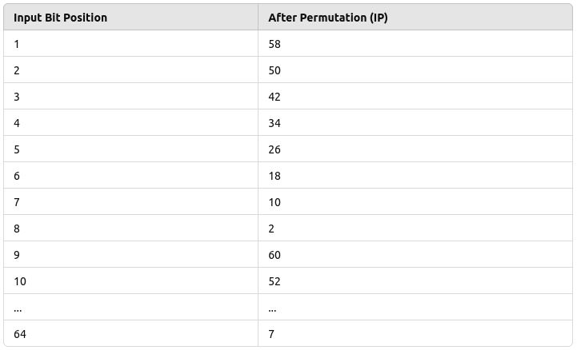

Modern Block Ciphers
- Block Ciphers ka Introduction: Cryptography mein block ciphers kaafi important role
play karte hain jab baat data ko securely encrypt karne ki hoti hai.
Block cipher ek aisa encryption method hai jo data ko fixed-size blocks (usually 64 ya 128 bits) mein
divide karta hai aur har block ko alag se encrypt karta hai.
Yeh method stream ciphers se different hai, jahan data ko bit by bit process kiya jata hai. Block
ciphers ki security do main properties ke upar depend karti hai:
- Confusion: Yeh property ensure karti hai ki ciphertext aur key ke beech ka relationship complex ho jaye. Matlab, attacker ko ciphertext dekh kar key ya plaintext ka pata lagana mushkil ho.
- Diffusion: Diffusion ka matlab hai ki jab plaintext ka ek symbol ciphertext mein convert hota hai, toh uska effect kai ciphertext symbols par padta hai. Yeh ensure karta hai ki data mein koi simple patterns na bane jo attacker ke liye useful ho sakte hain.
- DES (Data Encryption Standard) ka History: Block ciphers ki duniya mein ek bahut important cipher tha Data Encryption Standard (DES), jo 1970s mein develop kiya gaya tha. DES ne block cipher design ke liye ek strong foundation set ki thi. Lekin jaise-jaise computational power badhi, DES thoda weak pad gaya aur isme attacks ke liye vulnerabilities dikhne lagi. Yeh vulnerability computational advances ki wajah se thi, jaise faster computers jo DES ko break karne mein capable the. Isliye DES ko replace karne ke liye aur zyada secure encryption algorithms ki zarurat thi.
- AES (Advanced Encryption Standard) ka Introduction: DES ki limitations ko dekhte hue, ek modern block cipher ka development hua jise Advanced Encryption Standard (AES) kaha gaya. AES ne na sirf stronger security provide ki, balki better performance bhi di. AES ka key size zyada flexible hai (128, 192, aur 256 bits), aur iske algorithms kaafi fast hain, jo modern systems mein efficiently kaam karte hain. AES ko duniya ke sabse trusted encryption standard ke roop mein adopt kiya gaya hai, aur yeh aaj bhi government aur private sectors mein widely use ho raha hai.
- Block Ciphers ka Evolution: Is unit mein hum block ciphers ke evolution ko samjhenge. Hum pehle basic components aur design principles ko explore karenge jo block cipher ko banate hain, phir hum specific examples ko dekhenge jaise DES aur AES. Yeh samajhna zaroori hai kyunki yeh dikhata hai ki cryptography kaise evolve hui hai taaki modern security demands ko handle kiya ja sake. Jab hum in ciphers ko explore karenge, tab hume yeh samajh mein aayega ki kaise early encryption systems (jaise DES) ke principles ko use karke modern encryption methods ko build kiya gaya hai jo aaj ke complex security threats se nipat sakte hain.
Modern Block Ciphers Components
- In modern cryptography, block ciphers are widely used to secure data. These ciphers break the plaintext (the data we want to protect) into fixed-size chunks, or "blocks," and then encrypt each block using a complex series of steps. Each of these steps involves mathematical operations and transformations that make it nearly impossible for unauthorized users to recover the original data without the correct key.
- To understand how block ciphers work, we need to look at their key components. These components are like building blocks of the encryption process, each serving a unique purpose in turning readable data into ciphertext (encrypted data).
S-Box
- An S-Box, or Substitution Box, is a critical component in modern block ciphers. Its job is to take a small set of input bits and transform them into a different set of output bits. This process is known as substitution, where one set of values is substituted for another to confuse the relationship between the plaintext and the ciphertext. This confusion is an essential part of encryption because it makes it harder for attackers to detect patterns and break the cipher.
- In simpler terms, the S-Box replaces bits of the input with new bits according to a predefined table. This substitution makes it extremely difficult for attackers to predict or reverse-engineer the encryption process without knowing the key.
- The S-Box is predefined by the designers of the encryption algorithm and is standardized to provide consistent, secure encryption. Its primary purpose is to make the cipher resistant to cryptographic attacks like differential and linear cryptanalysis. A well-designed S-Box ensures that even small changes in the input result in unpredictable changes in the output, enhancing security.
Simple Example:
Imagine we have an input of 2 bits. The S-Box for this system might be a simple table like this:

How it works:
- Suppose our input is 01. According to the table, the output will be 10.
- The substitution is straightforward: you just replace the input with the corresponding output based on the S-Box.
This simple substitution hides the original bits and makes it harder for someone to understand what the input was by looking at the output.
Role of the S-Box in Encryption:
- The goal of the S-Box is to introduce confusion in the encryption process. Confusion means that the relationship between the key and the ciphertext is obscured. An attacker should not be able to easily deduce what key was used just by analyzing the ciphertext.
- To make it effective, modern block ciphers typically use many S-Boxes, performing multiple rounds of substitution on the data, often combined with other transformations (like permutations). This makes it extremely difficult to reverse the encryption without knowing the key.
P-Box
- The P-Box, or Permutation Box, is a crucial component of modern block ciphers. Its role is to shuffle the positions of the input bits without changing their values. This process is known as permutation, and it is essential for adding diffusion to the encryption process. Diffusion ensures that each bit of the plaintext influences many bits of the ciphertext, making it harder for attackers to trace the encryption back to the original message.
- In simpler terms, the P-Box rearranges bits in the input data according to a predefined pattern. While the S-Box changes the actual values of the bits, the P-Box only changes their positions. This bit shuffling plays a critical role in making the encryption more resistant to attacks.
- The P-Box is predefined by the encryption algorithm's designers and is standardized to ensure security. The purpose of the P-Box is to spread the effect of individual bits throughout the entire data block, making it difficult for attackers to find patterns that could help them break the cipher.
Simple Example:
Let’s say we have an 8-bit input: 10111001. The P-Box will rearrange the positions of these bits based on a predefined pattern. Assume the predefined permutation pattern is:

How it works:
- Now, using this pattern, the input 10111001 will be permuted as follows:
- Bit in position 1 (1) moves to position 4.
- Bit in position 2 (0) stays in position 2.
- Bit in position 3 (1) moves to position 6.
- Bit in position 4 (1) moves to position 8.
- Bit in position 5 (1) moves to position 1.
- Bit in position 6 (0) moves to position 7.
- Bit in position 7 (0) moves to position 5.
- Bit in position 8 (1) moves to position 3.
- The output after applying the P-Box will be: 11100110.
This rearrangement spreads the influence of each bit across the entire block, adding an extra layer of security.
Role of the P-Box in Encryption:
- The main goal of the P-Box is to introduce diffusion into the encryption process. Diffusion means that changes in the plaintext should spread throughout the ciphertext. Even a small change in the plaintext should result in significant, unpredictable changes in the ciphertext.
- Similar to the S-Box, modern block ciphers often use multiple P-Boxes in various rounds of encryption, combined with other transformations. This makes the overall encryption process highly secure and resistant to cryptanalysis.
Exclusive OR (XOR)
- The Exclusive OR, or XOR, is a fundamental logical operation used extensively in cryptography, especially in modern block ciphers. The XOR operation compares two input bits and produces an output bit based on a simple rule: the output is 1 if the input bits are different, and 0 if they are the same.
- XOR is widely used because it is a reversible operation. In encryption, it allows bits to be flipped in a predictable way, but without the key (or original bits), it is difficult for an attacker to reverse the operation. This makes XOR useful for combining keys with plaintext to produce ciphertext.
- In modern block ciphers, XOR is often used in combination with S-Boxes and P-Boxes to create secure, complex encryption systems. Its ability to provide both diffusion and confusion, when used correctly, makes it a critical component in many encryption algorithms.
Simple Example:
Consider two 4-bit inputs: 1010 and 1100. The XOR operation compares each
bit
from both inputs:

How it works:
- First bit:
1 XOR 1 = 0(since both bits are the same) - Second bit:
0 XOR 1 = 1(since the bits are different) - Third bit:
1 XOR 0 = 1(since the bits are different) - Fourth bit:
0 XOR 0 = 0(since both bits are the same)
The result of the XOR operation is 0110.
Role of XOR in Encryption:
- XOR is crucial in cryptography because of its reversibility. If you apply XOR twice with the same key, you get back the original data. This property allows encryption and decryption to work: encrypt with XOR, and decrypt by applying XOR again with the same key.
- XOR is used to combine the plaintext with the key during encryption. For example, if you XOR the key with the plaintext, you get ciphertext. To decrypt, you XOR the ciphertext with the same key, which reveals the original plaintext.
- In modern block ciphers, XOR is used repeatedly in various stages of encryption to ensure that changes in the plaintext or key result in unpredictable changes in the ciphertext, thereby enhancing security.
Circular Shift
- A Circular Shift, also known as a rotation, is a technique used in modern block ciphers to rearrange bits in a specific way. Unlike a standard shift, where bits are moved to the left or right with zeros filling the gaps, a circular shift wraps the bits around, creating a continuous loop.
- This process enhances diffusion in the encryption process. Diffusion means that a change in one bit of the input will affect multiple bits in the output, which increases security. Circular shifts are often combined with other transformations like S-Boxes and P-Boxes to form complex encryption algorithms.
Example:
For instance, if we have a 4-bit input: 1011, performing a circular left shift by 1 results in: 0111. Here, the leftmost bit '1' moves to the rightmost position, illustrating how the bits wrap around.
Role of Circular Shift in Encryption:
- The main goal of using circular shifts in encryption is to achieve better diffusion. This obscures the relationship between the plaintext and ciphertext, making it harder for attackers to decipher the encrypted data.
- In modern block ciphers, circular shifts are applied in multiple rounds, ensuring extensive transformation of the data, which enhances overall security.
Product Cipher
- A Product Cipher is a type of encryption that combines multiple encryption methods to enhance security. By using more than one encryption technique, it increases the complexity of the encryption process, making it more resistant to cryptographic attacks.
- This approach typically involves applying a series of transformations, such as substitutions and permutations, in succession. The idea is to layer these operations to obscure the relationship between the plaintext and ciphertext.
Example:
Imagine we have a plaintext block and we want to encrypt it using two methods: an S-Box for substitution followed by a P-Box for permutation. The process would look like this:
- Step 1: Apply the S-Box to the plaintext to produce an intermediate output.
- Step 2: Use the P-Box on the intermediate output to create the final ciphertext.
This combination of methods ensures that even if one method is compromised, the overall security of the product cipher remains intact due to the additional layers of encryption.
Role of Product Ciphers in Encryption:
- The primary goal of product ciphers is to enhance security by using multiple layers of encryption. This significantly complicates any attempts to analyze or break the cipher, as attackers would need to decipher each layer individually.
- Modern encryption algorithms often use product ciphers because they combine the strengths of different techniques, providing a robust framework for secure communication.
Thoughts of Feistel Design
Ab tak humne product ciphers ke concept ko samjha hai, aur ab hum Feistel design ko explore karenge, jo block ciphers ki security ko enhance karta hai. Product ciphers different encryption techniques ko layer karte hain, jabki Feistel structure in processes ko ek specific tarike se organize karta hai, jisse encryption zyada efficient aur secure ban jaata hai. Yeh design modern encryption algorithms ke liye foundation hai, jaise ki DES (Data Encryption Standard). Feistel design ke principles ko samajhna zaroori hai kyunki yeh dikhata hai ki kaise multiple rounds of processing plaintext aur ciphertext ke beech ke relationships ko obscure kar sakte hain, jisse security ko strengthen kiya jaata hai.
Feistel Cipher
Feistel cipher ek symmetric encryption method hai jo modern block ciphers mein use hota hai. Iska naam Horst Feistel ke naam par rakha gaya hai, jo is design ke creator the. Feistel design encryption process ko multiple rounds mein todta hai, jisse security enhance hoti hai aur efficiency bhi maintained rehti hai. Yeh structure yeh allow karta hai ki encryption aur decryption dono same algorithm se kiye ja sakein, jo isse kaafi versatile banata hai.
How the Feistel Cipher Works
Feistel cipher plaintext ke block par kaam karta hai, jisme plaintext ko do halves mein divide kiya jaata hai. Encryption process multiple rounds mein hota hai, aur har round mein transformations ka ek series apply kiya jaata hai using a round key jo original encryption key se derive kiya jaata hai. Chaliye, step-by-step samajhte hain ki Feistel cipher kaise kaam karta hai:
- Input: Sabse pehle, plaintext ko do halves mein divide kiya jaata hai: Left (L) aur Right (R).
- Round Function: Har round mein ek function (usually F) right half aur round key (K1, K2, etc.) ko process karta hai ek XOR operation ke through.
- XOR Operation: Round function ka output left half ke saath XOR kiya jaata hai, jisse ek naya value milta hai.
- Swapping: Har round ke baad, halves ko swap kiya jaata hai. Matlab, pehle round ka output second round mein input ke roop mein use hota hai, aur second round ka output pehle round ke liye input ban jaata hai.
- Repetition: Yeh process ek specified number of rounds ke liye repeat hota hai (usually 16 ya usse zyada rounds).
- Final Output: Jab saare rounds complete ho jaate hain, to combined halves final ciphertext banate hain jo encrypted data hota hai.
Key Points
- Feistel structure yeh allow karta hai ki encryption aur decryption dono same function ka use karte hue kiye ja sakein, jo iski efficiency ko enhance karta hai.
- Multiple rounds ko repeat karne se, Feistel cipher effectively plaintext aur ciphertext ke beech ke relationships ko obscure kar deta hai, jisse security increase hoti hai.
- Yeh design famous encryption standards jaise DES (Data Encryption Standard) ka base hai, jo abhi bhi widely use ho raha hai.
Data Encryption Standard (DES)
- DES ek symmetric key-block cipher hai, iska matlab hai ki encryption aur decryption dono ke liye same key use hoti hai.
- Isse NIST (National Institute of Standards and Technology) ne publish kiya tha.
- DES ek block cipher hai, jo data ko fixed-size blocks mein encrypt karta hai.
- Ab tak hum Feistel cipher ke baare mein padh chuke hain, aur DES bhi basicly Feistel structure ka use karta hai. Isme total 16 rounds hote hain, aur har round ek Feistel round hota hai.
- DES kaafi time tak widely used tha secure data transmission ke liye. Yeh data ko 64-bit blocks mein encrypt karta hai aur encryption process ko control karne ke liye 56-bit key use karta hai. Symmetric key cryptography ka matlab hai ki same key encryption aur decryption dono ke liye use hoti hai.
- Lekin computing power ke badhne ke saath, DES ab kam secure ho gaya hai kyunki iska key length (56 bits) brute-force attacks ke liye vulnerable hai. Isliye, DES ko modern encryption algorithms jaise AES ne replace kar diya hai. Fir bhi, DES ko samajhna zaroori hai kyunki yeh cryptography ke history aur encryption techniques ke evolution ko samajhne mein madad karta hai.
- DES ke steps yeh hain:
- Initial Permutation (IP): Sabse pehle, 64-bit plaintext ko ek predefined table ke base par rearrange kiya jaata hai. Is step mein data ko ek specific order mein arrange kiya jaata hai jo encryption ko zyada complex banata hai.
- 16 Feistel Rounds: Uske baad data ko 16 rounds ke liye Feistel structure se pass kiya jaata hai. Har round mein ek alag 48-bit subkey ka use hota hai jo original 56-bit key se derive hota hai. Is process mein data ko repeatedly modify kiya jaata hai, jisse security badhti hai.
- Final Permutation (FP): 16 rounds ke baad, final permutation apply hota hai, jisme bits ko dobara rearrange karke final 64-bit ciphertext banaya jaata hai, jo encrypted data hota hai.
General Structure of DES:
Explanation of the General Structure of DES:
- DES encryption process 64-bit plaintext se start hota hai. Sabse pehle, yeh plaintext ek Initial Permutation (IP) se guzarata hai, jisme bits ko ek fixed table ke according rearrange kiya jaata hai. Yeh permutation process data ko pehle hi confuse kar deta hai, jisse encryption thoda complex ho jata hai.
- Uske baad, data 16 rounds ke liye encryption ke through jaata hai, jo Feistel cipher structure pe based hota hai. Har round mein, plaintext ko do halves mein divide kiya jaata hai: ek left half (L) aur ek right half (R). Right half ko transform kiya jaata hai, aur phir left half ko XOR operation ke zariye transformed right half ke saath combine kiya jaata hai. Is process ke through data ka confusion aur diffusion hota hai, jo cryptographic principles hain jo data ko scramble karte hain aur isse secure banate hain.
- 16 rounds complete hone ke baad, dono halves ko dobara combine karke Final Permutation (FP) se guzaraya jaata hai. Is step mein, bits ko dobara rearrange kiya jaata hai, jisse final 64-bit ciphertext milta hai, jo encrypted data hota hai.
- Har ek round ke liye alag keys ki zaroorat hoti hai. DES ke paas ek 56-bit cipher key hoti hai, lekin har round ke liye yeh key se 48-bit subkey generate kiya jaata hai, jo round key generation process ke through banta hai. Matlab, DES mein ek 56-bit key start hoti hai, lekin har round mein different 48-bit subkey use hota hai.
- Ek important baat yaad rakhna, DES Feistel cipher model ko follow karta hai, iska matlab hai ki encryption process ko decryption mein easily reverse kiya jaa sakta hai. Yaani, agar kisi ko ciphertext mila hai, toh woh same steps follow karke original plaintext ko recover kar sakte hain, bas key ko properly reverse process mein use karna padta hai.
Initial and Final Permutation
- Data Encryption Standard (DES) mein initial permutation (IP) aur final permutation (FP) ka use hota hai encryption aur decryption process mein. Yeh permutations security ko directly enhance nahi karte, lekin yeh bits ko ek structured way mein reorder karte hain encryption aur decryption ke core process (Feistel rounds) se pehle aur baad mein.
Initial Permutation (IP)
- Initial permutation DES ke start mein ek baar hoti hai, jab 16 Feistel rounds shuru hone se pehle. Matlab yeh pehle step hai jo encryption process mein hota hai.
- Yeh 64 bits ko ek naye order mein rearrange karta hai, ek predefined table ke base par. Matlab, plaintext jo input diya gaya hota hai, usko ek different format mein convert kar diya jaata hai.
Initial Permutation Table (IP Table)
- Is table mein, plaintext ka pehla bit ko 58th position pe shift kiya jaata hai, doosra bit 50th position pe, aur aise har bit ko naye positions pe move kiya jaata hai. Yeh process 64 bits ke liye hoti hai. Is reordering se message ka structure thoda complex ho jaata hai, lekin yeh encryption ka part nahi hai. Yeh bas data ko ek naya format deta hai jisse analysis thoda mushkil ho jaata hai.
Purpose of Initial and Final Permutations
- Increase Complexity: Jabki initial aur final permutations directly security ko enhance nahi karte, yeh DES ke process ko analyze karna complex bana dete hain. Initial permutation input data ko scramble kar deti hai aur final permutation encryption ke baad us scrambling ko undo kar deti hai.
- Prepare Data for Feistel Rounds: Initial permutation bits ko reorder karti hai taaki data Feistel structure ke liye suitable ho, jo core encryption ka kaam karta hai.
Final Permutation (FP)
- Final permutation 16 Feistel rounds ke baad hoti hai. Yeh exact reverse hoti hai initial permutation ki, jo bit order ko restore kar deti hai taaki output waisa hi scrambled dikhai de jaise plaintext originally tha. Matlab, final permutation bit positions ko unke original positions pe laati hai, jo initial permutation ne change kiya tha.
Final Permutation Table (FP Table)

- Is table mein, Feistel rounds ke result ka 58th bit final ciphertext ka pehla bit ban jaata hai. Yeh reverse operation ensure karta hai ki bit positions ko restore kiya jaaye jo initial permutation ke time pe change ki gayi thi. Iska matlab hai ki data ko encryption ke baad phir se waisa hi structure milega, jaisa starting mein tha.
Rounds:
- DES mein total 16 rounds hote hain aur har round ek Feistel Cipher round hota hai.
- Jab Feistel cipher ka structure use hota hai DES mein, toh 64-bit plaintext ko do equal halves
mein divide kiya jaata hai:
- Left half, jise L1 kaha jaata hai, 32 bits ka hota hai.
- Right half, jise R1 kaha jaata hai, wo bhi 32 bits ka hota hai.
Sirf right half (R1) aur pehla round key (K1) ko DES function ke through pass kiya jaata hai. Us function ka output phir left half (L1) ke saath XOR kiya jaata hai. XOR operation ke baad, left aur right halves ko swap kiya jaata hai. Yeh process, dividing, processing, XORing, aur swapping, 16 rounds tak continue hota hai. Har round mein ek unique 48-bit round key ka use hota hai.
DES function har round mein crucial role play karta hai. Isliye, yeh samajhna zaroori hai ki DES function ka structure aur operations kaise kaam karte hain taaki aap samajh sakein ki DES mein encryption kaise hota hai.

DES Function
- DES function ek 48-bit key ko rightmost 32 bits of input data block pe apply karta hai, aur usse 32-bit output milta hai.
- Yeh function kuch important components ke through kaam karta hai:
- Expansion P-Box: Iska kaam hai 32-bit input ko 48 bits mein expand karna, jisme kuch bits ko duplicate kiya jaata hai taaki 8 groups of 6 bits ban sakein.
- Whitener (XOR Operation): Expanding ke baad, 48-bit data ko XOR kiya jaata hai 48-bit subkey ke saath, jo main key se derive kiya jaata hai.
- Group of S-Boxes: XOR operation ke baad ka 48-bit output 8 S-Boxes ke through pass hota hai. Har S-box 6 bits ko 4 bits mein convert karta hai, aur final output 32 bits ka hota hai.
- Straight P-Box: Yeh 32-bit output phir straight P-Box se permute hota hai, jo bits ko ek predefined order mein arrange karta hai, aur 32-bit output produce hota hai.
Function Diagram:

Ab DES function ka explanation kuch is tarah hai:
Sabse pehle, 32-bit right half ko Expansion P-Box mein bheja jaata hai, jahan usse 48 bits mein
expand kiya jaata hai, kuch bits ko duplicate karke. Phir, yeh 48-bit value 48-bit subkey ke saath
XOR hoti hai jo main DES key se generate hoti hai. XOR operation ke baad jo result aata hai, use 8
S-Boxes ke through pass kiya jaata hai. Har S-Box mein 6 bits ka input hota hai, jo 4 bits ke output
mein convert ho jaata hai, aur final output 32 bits ka hota hai.
Iske baad, yeh 32-bit output Straight P-Box se permute hota hai, jahan bits ko fixed order mein
rearrange kiya jaata hai. Is final 32-bit result ko DES ke overall structure mein wapas combine kiya
jaata hai.
Cryptanalysis
Cryptanalysis is the study of methods used to break cryptographic systems and decrypt
messages without knowing the secret key. The main goal of cryptanalysis is to discover weaknesses or
vulnerabilities in the algorithms that allow an attacker to bypass the encryption and access the
original data. Cryptanalysis is considered a critical part of cryptography because it helps improve the
security of encryption methods by identifying potential flaws.
There are various techniques used in cryptanalysis, but two common types that focus on analyzing block
ciphers are Differential Cryptanalysis and Linear Cryptanalysis. These
methods are particularly important in testing the strength of algorithms like the Data Encryption
Standard (DES).
Differential Cryptanalysis
Differential Cryptanalysis is one of the most well-known techniques used to break block ciphers. It was developed in the late 1980s and involves analyzing how differences in the input data affect the differences in the output data. The goal is to study the propagation of differences through the cipher and exploit patterns that can reveal information about the key.
- Basic Concept: In differential cryptanalysis, an attacker examines pairs of plaintexts that have specific differences (such as flipping certain bits) and compares how these differences propagate through multiple rounds of encryption.
- Objective: The goal is to find correlations between input differences and output differences that occur with higher probabilities than expected by random chance. By identifying these patterns, an attacker can make educated guesses about parts of the secret key.
- Application to DES: Differential cryptanalysis was one of the first attacks that showed DES has some vulnerabilities, although DES is still considered secure against this attack when a full 16-round encryption process is used.
Steps in Differential Cryptanalysis:
- Choose a Pair of Plaintexts: The attacker selects two plaintexts that differ by a specific amount, usually by flipping certain bits.
- Encrypt the Plaintexts: Both plaintexts are encrypted using the block cipher (without knowing the key).
- Analyze the Differences: The attacker analyzes the difference between the ciphertexts and looks for patterns that are common or occur with higher probability.
- Guess Part of the Key: Based on the observed patterns, the attacker can make guesses about part of the secret key and narrow down the possibilities.
- Iterate the Process: This process is repeated with different pairs of plaintexts to gather more information about the key until the key is fully recovered.
Differential cryptanalysis is a powerful attack that can break ciphers, but modern ciphers are designed with this attack in mind and have defenses to prevent it from being effective.
Linear Cryptanalysis
Linear Cryptanalysis is another well-known method for breaking block ciphers. It was developed shortly after differential cryptanalysis and is based on finding linear approximations that describe the relationship between the plaintext, ciphertext, and key. The goal of linear cryptanalysis is to exploit statistical biases in these relationships to recover the key.
- Basic Concept: In linear cryptanalysis, the attacker attempts to create linear equations that approximate the encryption process. These equations relate specific bits of the plaintext and ciphertext to bits of the key. By analyzing many such equations, the attacker can identify patterns that help them deduce the key.
- Objective: The main objective is to find linear approximations that hold true with a probability higher than random chance (greater than 50%). The more often these approximations hold, the more information the attacker can gather about the key.
- Application to DES: Linear cryptanalysis has been successfully used against DES, but like differential cryptanalysis, it is not effective against the full 16 rounds of DES encryption.
Steps in Linear Cryptanalysis:
- Collect Plaintext and Ciphertext Pairs: The attacker collects a large number of known plaintext-ciphertext pairs that have been encrypted using the same secret key.
- Analyze the Data: The attacker looks for linear patterns that relate specific bits of the plaintext and ciphertext to bits of the key.
- Create Linear Approximation Equations: These linear equations approximate the encryption process. Each equation gives a clue about a small part of the key.
- Count Occurrences: The attacker calculates how often these linear approximations hold true for the collected data. If the approximations hold true more than 50% of the time, they are considered useful.
- Guess the Key: Based on the useful approximations, the attacker makes educated guesses about the key bits and iteratively refines the guesses.
Linear cryptanalysis is more complex than differential cryptanalysis and often requires a large number of known plaintext-ciphertext pairs to succeed. However, it remains an important tool in evaluating the security of block ciphers.
Comparison of Differential and Linear Cryptanalysis
Both differential and linear cryptanalysis are powerful tools for breaking block ciphers, but they use different approaches:
- Differential Cryptanalysis: Focuses on analyzing how differences in input affect differences in output and looks for patterns in these differences.
- Linear Cryptanalysis: Focuses on creating linear approximations between the input and output and looks for statistical biases in these approximations.
Modern cryptographic algorithms are designed with defenses against these attacks, but understanding them is essential for evaluating the security of any cipher.
Block Cipher Design Principles
A block cipher is a method of encrypting text where a cryptographic key and algorithm
are applied to a block of data (often 64 or 128 bits) as a single unit, rather than one bit at a time
like in stream ciphers. The design of block ciphers is based on several principles that ensure the
cipher is secure and resistant to various forms of cryptanalysis.
There are three important design principles when creating a block cipher: the number of rounds, the
design of the function f, and the key schedule algorithm. These factors work together
to ensure that the encryption is strong, difficult to break, and resistant to known cryptanalysis
methods like differential and linear cryptanalysis.
1. Number of Rounds
The number of rounds in a block cipher refers to how many times the encryption process is applied to the data. Each round consists of several transformations that increase the complexity of the ciphertext, making it harder for an attacker to reverse-engineer or guess the original plaintext.
- Why Rounds Matter: The more rounds a cipher has, the more difficult it becomes for an attacker to break it. Each round scrambles the data further, adding layers of complexity. In practice, ciphers like DES use 16 rounds, while more modern ciphers like AES can use 10, 12, or 14 rounds depending on the key size.
- Security vs. Efficiency: While more rounds increase security, they also make encryption and decryption slower. The goal is to find a balance between security and performance.
- Role in Cryptanalysis Resistance: Block ciphers are designed with enough rounds to resist cryptanalysis methods like differential and linear cryptanalysis. Each round adds more diffusion and confusion, which are key to making the encryption secure.
In general, the number of rounds should be large enough to ensure that attacks become computationally infeasible. Fewer rounds may leave the cipher vulnerable to certain attacks, while too many rounds can lead to unnecessary inefficiency.
2. Design of Function f
The function f is a critical component of many block ciphers, especially in Feistel-based ciphers like DES. It is applied to part of the data and combined with the other half using operations like XOR. The security of the cipher heavily depends on how well the function f is designed.
- Confusion and Diffusion: The function f should introduce confusion and diffusion in the data. Confusion refers to making the relationship between the key and ciphertext as complex as possible, while diffusion ensures that changes in the input are spread widely across the output.
- Non-Linearity: The function f must be non-linear, meaning that it should be difficult to express as a simple mathematical formula. Non-linearity helps prevent attackers from using algebraic methods to break the cipher.
- S-Boxes: In many block ciphers, function f includes substitution boxes (S-boxes), which map input bits to output bits in a complex, non-linear way. The design of S-boxes is crucial because weak S-boxes can lead to vulnerabilities.
- Permutation (P-Boxes): Some ciphers also include P-boxes (permutation boxes) within function f. P-boxes rearrange the bits in the data, spreading out the influence of individual bits across the block to provide better diffusion.
The design of function f must be carefully tested to ensure it resists all known attacks. It must also be efficient so that encryption and decryption can be performed quickly without sacrificing security.
3. Key Schedule Algorithm
The key schedule algorithm is responsible for generating the subkeys used in each round of encryption. Instead of using the same key for every round, most block ciphers break the main key into several subkeys, which are then applied during the encryption process.
- Generating Subkeys: The key schedule algorithm takes the original encryption key and derives several subkeys from it. Each round uses a different subkey, which adds complexity to the encryption process.
- Security Considerations: The key schedule should ensure that the subkeys are sufficiently different from one another. If subkeys are too similar, it could weaken the encryption and make it more susceptible to attacks.
- Role in Resisting Attacks: A strong key schedule algorithm helps protect against attacks like related-key attacks, where an attacker tries to exploit the relationship between different subkeys. It also prevents weaknesses that could arise if the same key is reused in every round.
- Efficient Key Expansion: The key schedule must be efficient enough to generate subkeys quickly without compromising security. In some algorithms like AES, the key schedule includes both substitution and permutation steps to enhance security.
A well-designed key schedule algorithm ensures that the block cipher remains secure even if an attacker knows part of the plaintext or ciphertext. It adds an extra layer of protection by diversifying how the key is used in each round.
Block Cipher Modes of Operation
A block cipher works by encrypting data in fixed-size blocks (like 64 or 128 bits). To encrypt larger messages, block ciphers need specific methods to handle data beyond a single block. These methods are called modes of operation. Each mode describes how blocks of plaintext are encrypted or decrypted, and each has its own strengths and weaknesses depending on the use case.
The most commonly used block cipher modes of operation are:
- Electronic Codebook (ECB)
- Cipher Block Chaining (CBC)
- Cipher Feedback (CFB)
- Output Feedback (OFB)
- Counter Mode (CTR)
1. Electronic Codebook (ECB)
The Electronic Codebook (ECB) is the simplest mode of operation where each block of plaintext is encrypted separately with the same key.
- The plaintext is divided into blocks, and each block is encrypted individually using the block cipher. The same key is used for each block, and there is no link between blocks.
2. Cipher Block Chaining (CBC)
The Cipher Block Chaining (CBC) mode improves upon ECB by introducing an initial random input known as the Initialization Vector (IV) and linking the encryption of each block to the previous one.
- In CBC, the plaintext block is XORed with the previous ciphertext block before encryption. This ensures that the encryption of each block depends on the previous one, adding security.
- The first block is XORed with an IV to prevent identical plaintext blocks from producing identical ciphertext blocks.
3. Cipher Feedback (CFB)
The Cipher Feedback (CFB) mode is a mode of operation that turns a block cipher into a stream cipher. It allows encryption of smaller units of data, such as bits or bytes, rather than blocks.
- CFB works by encrypting the previous ciphertext block (or IV for the first block) and then XORing the encrypted block with the plaintext. The result is the next ciphertext block.
- Like CBC, CFB uses an IV for the first block to ensure security, and the subsequent ciphertext blocks depend on the previous ones.
4. Output Feedback (OFB)
The Output Feedback (OFB) mode is similar to CFB but with a key difference: instead of encrypting the previous ciphertext block, OFB continuously encrypts the IV (or its output) to create a stream of key bits.
- In OFB, the IV is encrypted to produce a keystream, which is then XORed with the plaintext to produce ciphertext. This process continues for each subsequent block by encrypting the previous keystream output.
- This mode effectively turns a block cipher into a synchronous stream cipher.
5. Counter Mode (CTR)
The Counter Mode (CTR) is a highly efficient mode of operation that also turns a block cipher into a stream cipher. It is especially useful for parallel processing and offers many advantages over other modes.
- CTR works by encrypting a counter value (a unique number for each block) and then XORing the result with the plaintext to produce the ciphertext. The counter is incremented for each block.
- The counter ensures that each block is encrypted with a different key stream, even if the plaintext blocks are identical.
Multiple DES
Multiple DES (Data Encryption Standard) ka matlab hai ki hum DES encryption ko ek se zyada baar apply karte hain taaki security ko badhaya ja sake. Jab standard DES me hum ek single 56-bit key ka use karte hain, tab Multiple DES me hum encryption process ko multiple times apply karte hain, lekin har baar alag key ka use karte hain. Is method ko introduce kiya gaya tha taaki single DES ke vulnerabilities ko door kiya ja sake.
Ab, yeh samajhna zaroori hai ki DES encryption apne aap me ek purana aur kaafi simple encryption algorithm tha, jo time ke saath vulnerabilities ka shikar ho gaya. Matlab, agar ek attacker ke paas same key ho, toh woh encrypted data ko easily decrypt kar sakta tha. To is problem ko solve karne ke liye, humne Multiple DES ka concept introduce kiya jisme hum encryption process ko zyada secure banane ke liye repeat karte hain.
Multiple DES ka use karne se security improve hoti hai, lekin itna simple bhi nahi hota ki koi bhi attacker easily decrypt kar sake. Isliye, Multiple DES ko do major variations me divide kiya gaya hai:
- Double DES (2DES): Isme DES ko do baar apply kiya jata hai. Matlab, ek data ko pehle ek key se encrypt kiya jata hai aur phir dusri key se dobara encrypt kiya jata hai. Isse security thodi better ho jati hai. Lekin, Double DES bhi kuch attacks ke liye vulnerable tha, jaise meet-in-the-middle attack, jo iski security ko thoda compromise kar sakta hai.
- Triple DES (3DES): Yeh Double DES se bhi zyada secure hai. Isme data ko teen baar encrypt kiya jata hai. Sabse pehle ek key se encrypt karte hain, phir dusri key se decrypt karte hain (yeh decrypt kyunki hum encryption ka reverse bhi karte hain), aur phir third key se dobara encrypt karte hain. Yeh process data ko kaafi secure bana deta hai aur isse 2DES ki comparison me better protection milti hai.
In short, Multiple DES ko introduce kiya gaya tha taaki hum DES ki security ko badha sake. Double DES aur Triple DES dono hi popular implementations hain, lekin Triple DES ko zyada secure maana jata hai, aur iski security level bhi kaafi high hai.
1. Double DES (2DES)
Double DES mein hum DES encryption ko do baar apply karte hain, lekin har baar alag keys use karte hain. Iska main goal yeh hai ki security ko improve kiya jaye aur DES ke original 56-bit key ko 112 bits tak badhaya jaye. Matlab, hum key ka length double kar dete hain taaki encryption zyada secure ho sake.
- How It Works:
- 2DES mein pehle plaintext ko first key (K1) se encrypt kiya jata hai, aur jo ciphertext milta hai usse fir second key (K2) se dubara encrypt karte hain. Matlab, ek hi data ko do alag keys se encrypt karte hain taaki security increase ho sake.
- Decryption ka process ulta hota hai: pehle hum K2 se decrypt karte hain, aur phir K1 se decrypt karte hain. Is process ko reverse karne se hume original plaintext mil jata hai.
- Double DES Process:
- Advantages:
- Yeh key length ko 56 bits se 112 bits tak badha deta hai, jo brute force attacks ke against zyada resistant hota hai. Matlab, agar kisi attacker ko data ko crack karna ho toh unhe kaafi zyada time lagta hai, kyunki key length badh gayi hai.
- Disadvantages:
- Double DES ab bhi kuch cryptographic attacks ke liye vulnerable hai, jaise meet-in-the-middle attack, jo effectively key length ko 57 bits tak reduce kar deta hai. Matlab, yeh attack security ko thoda compromise kar sakta hai, aur isse Double DES utni secure nahi rehti jitni expected thi.
- Meet-in-the-middle attack ke wajah se, Double DES ka security improvement single DES ke comparison mein utna significant nahi hota. Matlab, yeh attack key ko asani se reduce kar sakta hai aur isse overall security ko weaken kar deta hai.

2. Triple DES (3DES)
Triple DES (jo TDES ya 3DES ke naam se bhi jaana jaata hai) ko design kiya gaya tha taaki security ko aur zyada enhance kiya ja sake. Isme hum DES ko teen baar apply karte hain, aur har baar alag keys ya do keys ka use karte hain. Is process ke through hum ek bohot zyada strong encryption method create karte hain jo Double DES se kaafi zyada secure hota hai.
- How It Works:
- 3DES mein pehle hum plaintext ko first key (K1) se encrypt karte hain, phir dusri key (K2) se decrypt karte hain, aur phir teesri key (K3) se dobara encrypt karte hain. Yeh triple application of DES process security ko kaafi enhance kar deta hai.
- Agar hum do keys ka use kar rahe hain (matlab K1 = K3), toh bhi yeh process 3DES kehlata hai, bas is case mein humare paas sirf do unique keys hote hain.
- Triple DES Process:
- Advantages:
- 3DES ka key length 168 bits tak badh jata hai, jo isse brute force attacks ke against kaafi resistant bana deta hai. Matlab, agar koi attacker data ko crack karna chahe toh unhe bohot zyada time lagta hai.
- Teen stages of encryption aur decryption hone ki wajah se, security bhi kaafi stronger ho jati hai. Matlab, yeh ek kaafi solid encryption method hai jo data ko bohot securely encrypt karta hai.
- Disadvantages:
- 3DES abhi bhi modern block ciphers jaise AES ke comparison mein thoda slow hai, kyunki isme hum DES ko teen baar apply karte hain, jo time-consuming ho sakta hai.
- Yeh kuch attacks ke liye still vulnerable hai, lekin 2DES ke comparison mein yeh kaafi zyada secure hai.

Introduction to AES
Advanced Encryption Standard (AES) is a symmetric key encryption algorithm widely used to secure sensitive data. AES was introduced as a replacement for the Data Encryption Standard (DES), which became vulnerable to brute-force attacks due to its shorter key length. AES is known for its speed, security, and efficiency, making it the preferred standard for modern encryption.
Why AES Replaced DES
DES, with its 56-bit key length, was susceptible to brute-force attacks. As computational power increased, breaking DES became more feasible. To address these vulnerabilities, the National Institute of Standards and Technology (NIST) initiated a search for a stronger encryption algorithm. In 2001, NIST selected AES, which uses longer key lengths and is much harder to break than DES.
AES Key Features
- Key Length: AES supports key sizes of 128, 192, or 256 bits, offering stronger security than DES’s 56-bit key.
- Block Size: AES encrypts data in blocks of 128 bits, unlike DES, which uses 64-bit blocks.
- Speed and Efficiency: AES is much faster than DES, especially on modern hardware, as it is designed for both software and hardware efficiency.
- Security: AES provides excellent security against all known cryptographic attacks, making it highly reliable for securing sensitive data.
How AES Works
AES is a block cipher that operates on fixed-size blocks of data (128 bits) and applies several rounds of encryption to transform the plaintext into ciphertext. The number of rounds depends on the key length:
- 10 rounds for 128-bit keys
- 12 rounds for 192-bit keys
- 14 rounds for 256-bit keys
Main Steps of AES Encryption
- 1. Key Expansion: The original key is expanded into multiple round keys, one for each round of encryption.
- 2. Initial Round (AddRoundKey): The initial key is XORed with the plaintext block.
- 3. Rounds: Each round involves the following steps:
- SubBytes: A non-linear substitution step where each byte of the block is replaced using a substitution table (S-box).
- ShiftRows: The rows of the block are shifted cyclically to the left, increasing diffusion.
- MixColumns: Columns of the block are mixed together using linear algebra to enhance security (not used in the final round).
- AddRoundKey: The current block is XORed with the round key generated from the original key.
- 4. Final Round: The last round omits the MixColumns step and consists of SubBytes, ShiftRows, and AddRoundKey operations.
Security Strength of AES
AES is highly secure due to its use of longer key lengths and more complex encryption rounds compared to DES. Its strength lies in its resistance to various cryptographic attacks:
- Brute-Force Attacks: AES’s key lengths (128, 192, and 256 bits) make brute-force attacks impractical, even with modern computing power.
- Linear and Differential Cryptanalysis: AES is designed to resist both linear and differential cryptanalysis, which are common methods for breaking symmetric ciphers.
- Side-Channel Attacks: While AES itself is secure, implementations of AES must be protected against side-channel attacks, such as timing attacks and power analysis attacks.
AES has become the global standard for symmetric key encryption due to its high security, efficiency, and flexibility. It is widely used in applications such as secure communications, data storage, and payment systems. Unlike DES, which had limitations due to its shorter key length and vulnerabilities to attacks, AES offers stronger encryption with more complex rounds, making it highly resistant to modern cryptographic threats.